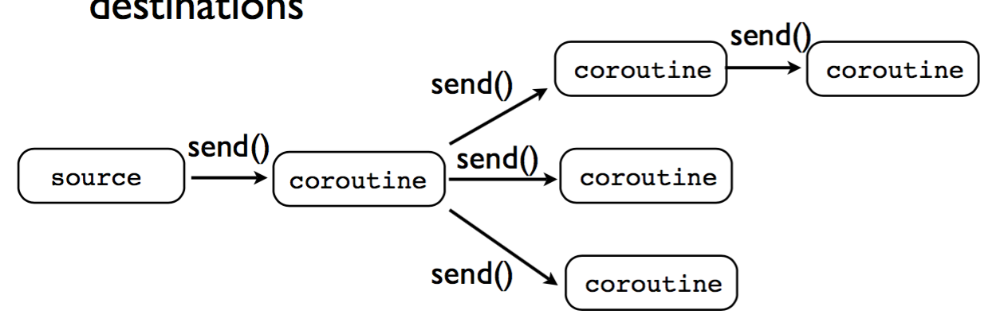
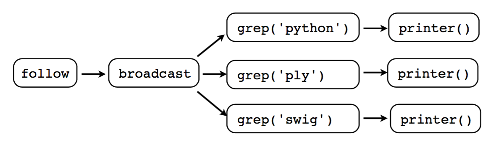
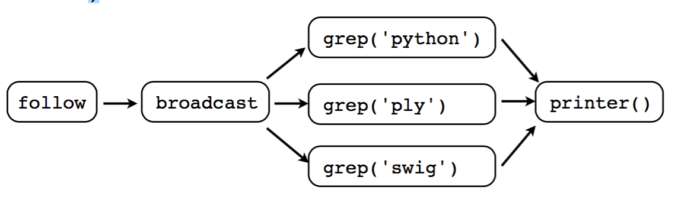
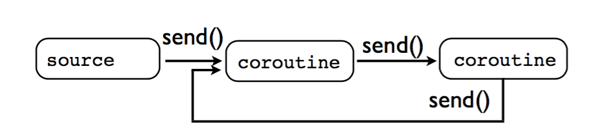

2017-07-03-python-协程和生成器
Table of Contents
1 生成器
1.1 简单的generator
python中的for很好用，但是如果循环的次数较多的话，需要占用很多内存。
于是就有了 generator ，需要在时候才计算。看看下面的的例子：
L = [x for x in range(10)] l = (x for x in range(10)) print L print l
generator可以例用next来访问：
l = (x for x in range(4)) print l.next() print l.next() print l.next() print l.next() print l.next()
结果如下：
0
1
2
3
Traceback (most recent call last):
File "<stdin>", line 1, in <module>
File "/tmp/main.py", line 6, in <module>
print l.next()
StopIteration
可以看到，最后一个next抛出了一个 StopIteration 。我理解generator应
该是靠这个机制来完成它正确地打开方式的：
l = (x for x in range(3)) for i in l: print i
def fib(max): n, a, b = 0, 0, 1 while (n < max): print '---->b = %s<----' % b yield b a, b = b, a + b n = n + 1 g = fib(6) for i in g: print '====>b = %s<====\n' % i
1.2 定义函数做为generator
比较复杂的情况下，还可以定义一个函数做为generator，比如打印1到n的函 数：
def foo(n): for i in range(n): print i foo(4)
上面的函数稍威修改一下就是一个generator啦：
def foo(n): for i in range(n): yield i print foo(3) for n in foo(3): print n
如果一个函数中包含yield关键字，那么这个函数就不再是个普通函数，而 是一个generator
generator不像一般函数一样遇到return或者运行到最后返回。而generator 的函数，在调用next时开始执行，遇到yield返回，吐出yield的内容，再次 调用next又从上次yield后执行。
def foo(): print 'step 1' yield '[test] %s from yield' % 1 print 'step 2' yield '[test] %s from yield' % 1 print 'step 3' yield '[test] %s from yield' % 1 f = foo() print f.next() print f.next() print f.next()
2 python中的协程
协程和 生成器 类似，但是不同是的，生成器是数据的生产者，协程是数据的 消费者。
对应生成器的例子：
def foo(n): for i in range(n): yield i print foo(3) for n in foo(3): print n
这样可以定义一个协程：
def grep(pattern): print("Searching for", pattern) while True: line = (yield) if pattern in line: print(line)
和生成器一样，定义一个协程后，调用 next() 函数才开始执行，到
yield 后停止，然后调用 send() 函数给协程发送数据。协程收到数据
后继续往下执行，直到下一次的 yield 。
def grep(pattern): print("Searching for", pattern) while True: line = (yield) print 'recieve data ', line if pattern in line: print(line) print 'after if' g = grep('test') g.next() g.send('hi this is') g.send('hi this is test')
#!/usr/local/bin/python # coroutine.py # # A decorator function that takes care of starting a coroutine # automatically on call. def coroutine(func): def start(*args, **kwargs): cr = func(*args, **kwargs) cr.next() return cr return start # Example use if __name__ == '__main__': @coroutine def grep(pattern): print "Looking for %s" % pattern while True: line = (yield) if pattern in line: print line, g = grep("python") # Notice how you don't need a next() call here g.send("Yeah, but no, but yeah, but no") g.send("A series of tubes") g.send("python generators rock!")
3 理解一下python中的yield
import time def consumer(): r = '' while True: n = yield r if not n: return print('[CONSUMER] Consuming %s...' % n) time.sleep(1) r = '200 OK' def produce(c): c.next() n = 0 while n < 5: n = n + 1 print('[PRODUCER] Producing %s...' % n) r = c.send(n) print('[PRODUCER] Consumer return: %s' % r) c.close() if __name__=='__main__': c = consumer() produce(c)
可以看到 !n = yield r! 这一句，yield出去的r返回给send的发起者的。而
yield 本身的值赋给了n，n就是send发送过来的。。
执行流程是这样的：
- 主程序调用produce，c.next()执行就直接切换到consumer中开始执行。
- consumer中执行到yield，切换到produce从c.next()后继续执行，此时从 consumer中yield回来的值是空。也就是consumer中第一句给r的赋值。
- produce进入while，执行到c.send(n)。然后切换到consumer又从yield开 始执行。此时consumer收到的n是由produce发送过来的值。
- consumer睡一秒后给r赋值，然后重复while循环。到yield后吐出新赋值的 r给produce。
- produce打印返回值r，重复循环到c.send(n)。进入步骤3。
4 参考资料三写得太好了，我理解式的翻译了一些
就是它，建议英语可以的直接读它 Coroutines.pdf
4.1 更进一步理解生成器
4.1.1 一个python版本的 tail -f
import time def follow(thefile): thefile.seek(0,2) # Go to the end of the file while True: line = thefile.readline() if not line: time.sleep(0.1) # Sleep briefly continue yield line logfile = open("access-log") for line in follow(logfile): print line,
程序执行后，会一直在while中循环，如果文件结尾有插入数据，用yield吐出 来进行输出。输出完后再次进入follow中的while循环继续执行
4.1.2 生成器做为管道
结合 一个python版本的 tail -f ，来看看生成器做为管道的用法：
import time def follow(thefile): thefile.seek(0,2) # Go to the end of the file while True: line = thefile.readline() if not line: time.sleep(0.1) # Sleep briefly continue yield line def grep(pattern, lines): for line in lines: if pattern in line: yield line # Set up a processing pipe : tail -f | grep python logfile = open("access-log") loglines = follow(logfile) pylines = grep("python",loglines) # Pull results out of the processing pipeline for line in pylines: print line,
grep本身就是一个生成器，它接受一个安符串的pattern和一个生成器做为参
数。程序执行时，应该是一直在 follow 函数的while中循环等待。如果文
件结尾有数据进来，follow吐出数据，此时进入grep中的for，如果在这一行
中找到pattern，grep又吐出数据进行输出。完毕后又回到follow的while循环
中继续等待。
4.1.3 一个特殊一点的例子
注意看为啥中间的数字没有了。
def countdown(n): print "Counting down from", n while n >= 0: newvalue = (yield n) # If a new value got sent in, reset n with it if newvalue is not None: n = newvalue else: n -= 1 c = countdown(5) for n in c: print n if n == 5: a = c.send(3) print 'a = %s' % a
还需要注意的 ：send后如果不接收它的结果，那么countdown中间有一次 yield出来的3将被丢弃。比如这样，结果里面是没有3的：
def countdown(n): print "Counting down from", n while n >= 0: newvalue = (yield n) # If a new value got sent in, reset n with it if newvalue is not None: n = newvalue else: n -= 1 c = countdown(5) for n in c: print n if n == 5: c.send(3)
4.1.4 简单总结
- 生成器为迭代器产生数据。
- 协程是数据的消费者。
- 不要把协程和迭代器混在一起。
- 协程与迭代器无关。
4.2 更进一步理解协程
4.2.1 使用协程写的 tail -f
import time def coroutine(fun): def start(*arg, **args): cr = fun(*arg, ** args) cr.next() return cr return start def follow(thefile, target): thefile.seek(0,2) # Go to the end of the file while True: line = thefile.readline() if not line: time.sleep(0.1) # Sleep briefly continue target.send(line) @coroutine def printer(): while True: line = (yield) print line, f = open("access-log") follow(f, printer())
程序执行后：
- 执行printer到yield返回follow。
- follow循环等待数据。
- 如果有数据follow发送给printer。
- printer输出数据后，再次从yield返回follow进入步骤2。
4.2.2 协程做为管道
import time def coroutine(fun): def start(*arg, **args): cr = fun(*arg, ** args) cr.next() return cr return start def follow(thefile, target): print 'begin follow' thefile.seek(0,2) # Go to the end of the file while True: line = thefile.readline() if not line: time.sleep(0.1) # Sleep briefly continue target.send(line) @coroutine def printer(): print 'begind printer' while True: line = (yield) print line, @coroutine def grep(pattern, target): print 'begin grep' while True: line = (yield) if pattern in line: target.send(line) f = open("kk.txt") follow(f, grep('python', printer()))
从打印可以看到，程序开始这样执行：
- 从printer开始执行，到yield后停下等待数据。
- 然后执行grep到yield。
- 然后执行follow进入while一直等待数据。
- 有数据后follow发送给grep。
- grep处理后，如果有合适的数据再发送给printer处理，完成后从yield返 回follow。如果grep没有发现合适的数据就直接从yield返回follow。
- printer收到数据后从再次停在yield后返回grep。然后grep返回follow进 入步骤3。
结合 生成器做为管道 ，生成器是使用迭代器从管道中拉取数据。而协程是使
用 send() 向管道中push数据。
4.2.3 协程做广播
结合 协程做为管道 ，其实协程还有类似于广播的功能：

import time def coroutine(fun): def start(*arg, **args): cr = fun(*arg, ** args) cr.next() return cr return start def follow(thefile, target): print 'begin follow' thefile.seek(0,2) # Go to the end of the file while True: line = thefile.readline() if not line: time.sleep(0.1) # Sleep briefly continue target.send(line) @coroutine def printer(): print 'begind printer' while True: line = (yield) print line, @coroutine def grep(pattern, target): print 'begin grep' while True: line = (yield) if pattern in line: target.send(line) @coroutine def broadcast(targets): while True: item = (yield) for target in targets: target.send(item) f = open("kk.txt") follow(f, broadcast([grep('python', printer()), grep('ply', printer()), grep('simple', printer())]))
这个和 协程做为管道 的区别就只是到了broadcast，它send给了多个 coroutine。这种情况的模型如下： 
另一种模型是这样的：
f = open("access-log") p = printer() follow(f, broadcast([grep('python', p), grep('ply', p), grep('simple', p)]))

4.2.4 错误地使用协程
不能对一个正在执行的协程再调用 send() 。比如这样就会导致程序挂掉：

4.3 使用协程和生成器做成一个类似于OS的多任务系统
class Task(object): taskid = 0 def __init__(self,target): Task.taskid += 1 self.tid = Task.taskid self.target = target self.sendval = None # Task ID # Target coroutine # Value to send def run(self): return self.target.send(self.sendval) if __name__ == '__main__': # A very simple generator def foo(): print "Part 1" yield print "Part 2" yield t1 = Task(foo()) t1.run() t1.run()
调度器：
class Scheduler(object): def __init__(self): self.ready = Queue() self.taskmap = {} def new(self,target): newtask = Task(target) self.taskmap[newtask.tid] = newtask self.schedule(newtask) return newtask.tid def schedule(self,task): self.ready.put(task) def mainloop(self): while self.taskmap: task = self.ready.get() result = task.run() self.schedule(task)
第一个多任务的例子：
from kombu import Queue class Task(object): taskid = 0 def __init__(self,target): Task.taskid += 1 self.tid = Task.taskid self.target = target self.sendval = None # Task ID # Target coroutine # Value to send def run(self): return self.target.send(self.sendval) class Scheduler(object): def __init__(self): self.ready = Queue() self.taskmap = {} def new(self,target): newtask = Task(target) self.taskmap[newtask.tid] = newtask self.schedule(newtask) return newtask.tid def schedule(self,task): self.ready.put(task) def mainloop(self): while self.taskmap: task = self.ready.get() result = task.run() self.schedule(task) def foo(): while True: print "I'm foo" yield def bar(): while True: print "I'm bar" yield sched = Scheduler() sched.new(foo()) sched.new(bar()) sched.mainloop()
上面这个例子中，如果一个任务退出，会导致crash。所以需要处理一下任务 退出的情况：
from kombu import Queue class Task(object): taskid = 0 def __init__(self,target): Task.taskid += 1 self.tid = Task.taskid self.target = target self.sendval = None # Task ID # Target coroutine # Value to send def run(self): return self.target.send(self.sendval) class Scheduler(object): def __init__(self): self.ready = Queue() self.taskmap = {} def exit(self, task): print "Task %d terminated" % task.tid del self.taskmap[task.tid] def new(self,target): newtask = Task(target) self.taskmap[newtask.tid] = newtask self.schedule(newtask) return newtask.tid def schedule(self,task): self.ready.put(task) def mainloop(self): while self.taskmap: task = self.ready.get() try: result = task.run() except StopIteration: self.exit(task) continue self.schedule(task) def foo(): for i in xrange(5): print "I'm foo" yield def bar(): for i in xrange(10): print "I'm bar" yield sched = Scheduler() sched.new(foo()) sched.new(bar()) sched.mainloop()
这个例子中，scheduler可以看成是操作系统。任务中的yield就是操作系统中 的“中断”（或者是trap）。如果任务需要请求操作系统（scheduler）提供 的服务，即系统调用，需要带参数使用yield：
class SystemCall(object):
def handle(self):
pass
class Scheduler(object):
...
def mainloop(self):
while self.taskmap:
task = self.ready.get()
try:
result = task.run()
if isinstance(result,SystemCall):
result.task = task
result.sched = self
result.handle()
continue
except StopIteration:
self.exit(task)
continue
self.schedule(task)
这里的 SystemCall 就是系统调用的基类，所有系统调用都继承自它。在
mainloop中执行时，如果任务yield出来的是SystemCall，则先保存上下文
（当前任务和调度器）。下面定义一个返回任务id的系统调用：
class GetTid(SystemCall): def handle(self): self.task.sendval = self.task.tid self.sched.schedule(self.task)
那么此时任务应该这样定义：
def foo(): mytid = yield GetTid() for i in xrange(5): print "I'm foo", mytid yield def bar(): mytid = yield GetTid() for i in xrange(10): print "I'm bar", mytid yield
总的流程：，
- 调度器先调度到一个任务，任务yield出来一个系统调用。
- 调度器判断是系统调用没错后，保存上下文环境，然后进入系统调用执行。
- 本例系统调用中修改了任务自己的属性
self.sendval。然后重新把该 任务加入加绪队列。 - 调度器继续从就绪队列中取出任务进行执行。
- 再次调度到该任务时，它继续从yield处开始执行，而这次mytid就是系统
调用设置的
self.sendval。它是在执行时通过send发送过来的。其实 可以理解为系统调用的返回值就是它设置的self.sendval。
4.4 总结
yield总共有三个用途：
- 生成迭代器，数据的生产者。
- 接收消息，数据的消费者。
- 类似于操作系统的trap，实现多任务。
忠告就是： 不要尝试写一个带yield的函数来实现两个以上的上述功能。
5 参考资料
-
但是在A中是没有调用B的，所以协程的调用比函数调用理解起来要难一些。 看起来A、B的执行有点像多线程，但协程的特点在于是一个线程执行，那和多线 程比，协程有何优势？ 最大的优势就是协程极高的执行效率。因为子程序切换不是线程切换，而是由程 序自身控制，因此，没有线程切换的开销，和多线程比，线程数量越多，协程的 性能优势就越明显。 第二大优势就是不需要多线程的锁机制，因为只有一个线程，也不存在同时写变 量冲突，在协程中控制共享资源不加锁，只需要判断状态就好了，所以执行效率 比多线程高很多。 因为协程是一个线程执行，那怎么利用多核CPU呢？最简单的方法是多进程+协程， 既充分利用多核，又充分发挥协程的高效率，可获得极高的性能。 Python对协程的支持还非常有限，用在generator中的yield可以一定程度上实现 协程。虽然支持不完全，但已经可以发挥相当大的威力了。 - 廖雪峰讲gevent
- 这里还有一个不错的英文介绍
Python通过yield提供了对协程的基本支持，但是不完全。而第三方的gevent 为Python提供了比较完善的协程支持。